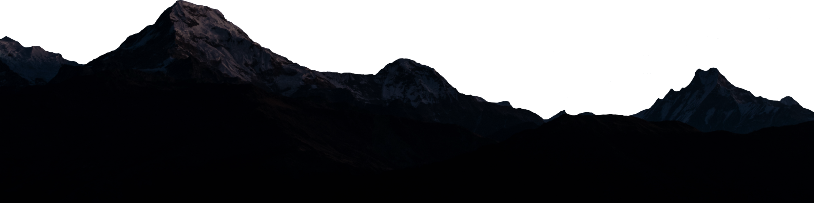

I’m currently studying Full-Stack JavaScript at Code Fellows. As a former Sergeant in the Marine Corps and a former barbershop owner, I’ve had the chance to meet and work with many people from a diverse background. I’ve been told by many people that one of my greatest strengths is my ability to create a comfortable atmosphere for my peers to relax and be themselves. Which then, promotes a good growth mindset environment. I got into software development because I love tech and want to build fun and useful apps that everyone can use. That’s why I chose JavaScript, the accessibility to so many people because of the internet. My Ideal environment is where I can develop apps that can change people’s lives for the better. I’m looking to get my foot in the door in tech as an entry-level developer. I'm excited about tech because it's bringing people together from all over the world who normally wouldn't have any contact with.
